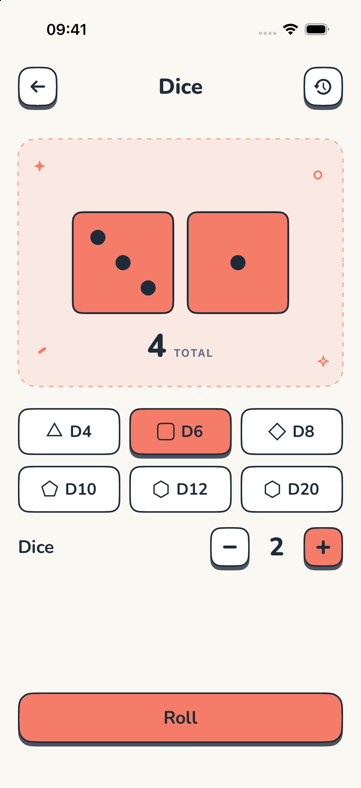
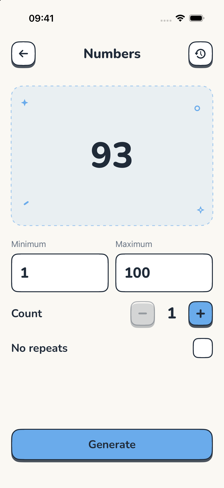
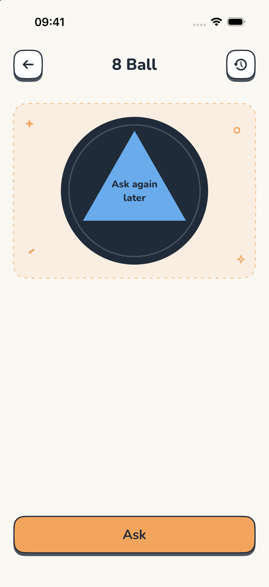

Fluky
Leave it to chance.
Game-night rolls. Dinner decisions. Five playful randomizers for whatever needs a little chance.
Version 2.0 is in testing for iPhone and iPad. This page describes the upcoming version.



Five ways to make the call
- Dice. Roll up to 20 dice: D4, D6, D8, D10, D12 or D20.
- Coin. Heads or tails, with a tap.
- Numbers. Choose a range, draw up to 50 numbers and decide whether repeats are allowed.
- Picker. Add your own choices, one per line, and pick one at random.
- 8 Ball. Tap Ask or shake your iPhone to reveal one of 20 answers.
Ready when you are
All five tools work offline. No account is required. Settings, choices and the latest 50 results per tool are saved locally on your device.
Includes dark mode and Reduce Motion support. Read the privacy policy or get support.